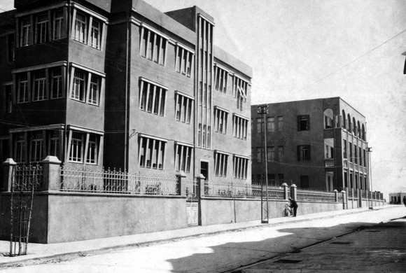

Spooky Encounter

We will call him Leibel. When I interviewed him twenty years ago, he was in his seventies and had a long white beard. His broad shoulders testified to his strength, and his direct eye contact lent him an aura of seriousness and forcefulness. Still, as we spoke about incidents in his life, he occasionally had a mischievous look in his eyes.
When we began talking seriously, he warned me, “I refuse to allow you to write this using my name.” He insisted without explaining.
In the last years of his life, Leibel and his wife lived in London and his children, all married, were scattered all over the world on the Rebbe’s shlichus.
PART II
I was born in 5691/1931 and was 14 when World War II ended. I lost my parents and family in the Holocaust when they were taken to a concentration camp at the beginning of the war. I was a young, scared boy who was all alone. I won’t describe those difficult days. Suffice it to say, for a long time I wandered around a devastated Germany without knowing where to turn.
I had one hope, a single ray of light, the longing to get to Eretz Yisroel as quickly as possible and settle there. For some time after the war I was still in Europe and it was only a year later, around the end of 1946, that I managed, with great effort, to join one of the illegal ships heading for Eretz Yisroel.
Even when I finally arrived in Eretz Yisroel, my suffering did not end. Although I had some acquaintances there from Europe, they were busy with their own adjustments and I did not want to be an additional burden to them. So I went around for a long time to various places without a permanent dwelling.
In 1952, I went to learn in Yeshivas Toras Emes in Yerushalayim which had moved two or three years earlier to Mea Sh’arim. It was under the leadership of the mashpia, Rabbi Moshe Yehuda Reichman a”h.
I was 22 and ready for a shidduch. People began making suggestions. I had heard about the young Lubavitcher Rebbe in yeshiva but did not know him personally, of course. Still, I occasionally wrote him letters in which I asked for his opinion.
One time, I wrote that I was ready for shidduchim and soon I would get engaged and need money to pay for the wedding expenses and support for us for the period after I married until I found a steady income. So I asked the Rebbe’s permission to work a few hours a day so I could save some money for when I needed it.
Perhaps today this would be seen as an impudent question, but back then, Eretz Yisroel was flooded with new immigrants from many countries and the economic situation was bleak. The country was under a regime of austerity. As for me, I was a young man who had lost his parents in the Holocaust and had no relatives. For myself, the fact that I lived hand to mouth didn’t bother me all that much, but I felt I could not impose this poverty on a family. When I would marry, I would not be on my own and I would have the responsibility to support someone else. These were my thoughts at the time, and therefore, I asked the Rebbe permission to go to work for a few hours a day.
A few weeks later, I received the Rebbe’s response. I do not recall the words exactly but the gist of it was that the Rebbe told me to continue learning in yeshiva. He promised me that when the time came to marry and be supported, Hashem would provide the needs. At the end of the letter, the Rebbe blessed me with success in my learning and in life.
In light of the Rebbe’s advice and blessings, I continued learning in yeshiva and cleared my head of all worries regarding the future. I diligently learned Nigleh and Chassidus.
In 5713, I got engaged with the Rebbe’s consent and blessings. I well-remembered what the Rebbe wrote in the letter I had received the year before that told me to continue learning and that when I’d need money for the wedding and what to live on, Hashem would provide what was needed, and that is what I had done. I had no idea where help would come from, but I removed all worries from my heart and relied on the Rebbe’s promise that Hashem would provide my needs.
A few weeks passed. The wedding date was set and preparations got under way.
PART III
One summer day in 1953, as I sat and learned in the zal of the yeshiva, one of the bachurim brought me a telegram. I wondered who had sent it. I opened and read it. There were a few lines, something like: I Avraham, your father’s brother, greatly desires to see you tomorrow at 3:00 at the Nachmeini Hotel on Rechov Nachmeini in Tel Aviv.
When I was a boy, my father had told me he has a brother by the name of Avraham who was already living in Argentina for many years. There was hardly any communication between the families and I certainly did not have any connection with this mystery uncle in South America.
When I got the telegram, I suddenly remembered him and was thunderstruck. How did he know I was in Eretz Yisroel? How did he know where I was after all the displacement following the war?
I had no answers to these questions. I figured, here was my father’s brother who had come from so far away and had somehow managed to locate me, so I would go and see him at the hotel as he requested. The only thought that I had was one of hope. Perhaps I would hear from him details about family members. Maybe others had also survived.
The next day, I got up early and hurried to daven. After breakfast I went to the bus station. A trip from Yerushalayim to Tel Aviv in those days wasn’t simple. I took a Torah book with me and spent most of the trip studying it. I occasionally looked up to see the breathtaking scenery around the highway. It was all new to me. It was the second or third time in my life that I was going on this road.
I arrived in Tel Aviv, the big and unfamiliar city, especially for a Yerushalmi like me, in the early afternoon. I began asking for the Nachmeini Hotel on Rechov Nachmeini. There weren’t many hotels in Tel Aviv in those days. It was a small place relative to today. The passersby could easily show me the way, so at three o’clock I finally arrived at the hotel lobby.
I thought I might be able to identify him and began nervously looking around. Within a few minutes, I felt a hand on my back.
“Leibel?” I heard a voice behind me ask.
I turned around and saw an average height man with round glasses, smiling eyes, wearing a lightweight suit. His smiling face immediately won me over.
“Yes,” I blurted and we sat down in a corner far from the lobby.
An awkward silence ensued for a long moment. I had no idea what to say to the man and how to begin talking to him, but he started talking first. I remember that he asked me gently what I knew about the fate of my father and the family and he wanted to know what had happened to them before the deportation and selection.
I told him everything I knew, describing the last days when we were a united family. It was very painful for me to recall those harsh times, but I remember that somewhere in my heart I felt relieved when I spoke to him. At first, he did not talk much aside from a few questions that he asked occasionally to understand my story. I could see he was horrified by the magnitude of the tragedy.
Then my uncle began telling me stories about my father’s childhood, things I did not know, and it was my turn to listen. I remember listening closely. It was all new to me and I wanted to know more and more.
It was evening when we finished our conversation. My uncle expressed his wish to keep up the relationship even though he did not know how much more time he would spend in Eretz Yisroel.
We shook hands warmly when we parted. I had already turned to go when my uncle took a sealed envelope out of his pocket and gave it to me. I glanced at it and then stuffed it into my inner pocket. I left quickly because I was nervous about getting the last bus back to Yerushalayim.
PART IV
It was late at night when I returned to yeshiva. Most of the bachurim were already sleeping. I quickly arranged my things and prepared to go to sleep when I suddenly came across the envelope in my inner coat pocket that my uncle had pushed into my hand. I had completely forgotten about it and now hurried to open it.
I saw ten $50 bills! I couldn’t believe it!
It’s hard for me to know exactly what this would be worth today, but it was surely no less than $20,000 today, an enormous amount, in any case, especially for a yeshiva student who had never seen such a large amount. $500!
I didn’t know what to do. I was overcome and began pacing the room. I won’t go on at length describing the inner turmoil I was experiencing during those moments. I realized he had given me the money as a gift to his closest relative on his brother’s side, who had survived the war, but $500?!
I went to sleep later than usual. I thought about the money for hours. In some place in my heart, I knew that this was what the Rebbe meant in his letter of a year earlier. In truth, if not for the Rebbe’s promise I would have been very worried. The wedding date was approaching and I still had no money for expenses and support. Now I did, and I was happy that I would be able to buy things for the wedding, a gift for the kalla, etc.
It was an enormous surprise for me, in addition to the joy over having finally found a relative in the world, a fact that implanted a special feeling of joy in my heart during that fitful night. Before falling asleep, I decided I needed to go back to Tel Aviv the next day to thank my uncle for his gift.
PART V
I woke up early again the next morning and rushed to daven, ate something, and rushed to the bus station. When I arrived in Tel Aviv I already knew how to get to the Nachmeini Hotel where my uncle was staying. I soon arrived in the lobby.
This time, of course, my uncle wasn’t waiting for me. I went over to the receptionist and asked for Avraham from Argentina and said his last name.
The receptionist checked the guest book, then looked me up and down and said, “There is nobody by that name staying here.”
I had not expected this. I remember saying unthinkingly to him, “What do you mean? He is my uncle and yesterday we met here in the lobby.” I pointed at the spot where we had sat.
The clerk opened the book again and searched more carefully for the name I had said. He also looked in the lists of the previous days. After a while, he looked up and said, “I am sorry sir, there is nobody here by that name and no guest by that name in previous days. In recent months there have been no guests from Argentina.”
I thanked him and turned to go. I guess he felt bad for me and he called me back and tried to help me.
“Are you sure you met him yesterday in this hotel?”
“Yes,” I stated firmly. “We sat in these two chairs and spoke for hours. I remember this curtain, hanging in the corner. I also remember looking at the Sadigora Rebbe’s beis midrash out the window.”
The clerk shrugged. He had done what he could and I said goodbye and left the hotel. Maybe I was confused and met my uncle somewhere else?
I went back and examined the building again and again, outside and inside, and was certain that we had met there, in the lobby. Maybe my uncle was staying in a different hotel and only chose this hotel to meet with me, but I was skeptical about this. Despite what the receptionist said, I was sure that my uncle had been staying at this hotel.
That night, I returned, disappointed, to yeshiva. I was also unhappy about the wasted day.
In the following days I got ready for my wedding and thoughts of my uncle were pushed aside.
PART VI
Many years passed. After I married, I continued living in Yerushalayim for many years. We had children (who are shluchim today) and I nearly forgot the strange story about the uncle from Argentina, the $500 he had given me, and his disappearance.
It was 5728, 15 years later, when I got a phone call from some hotel in Yerushalayim. The person introduced himself as my uncle Avraham from Argentina, my father’s brother.
As soon as he began speaking, even before he introduced himself, his voice sounded familiar to me but I only identified it after he said his name. He said that he had come to Eretz Yisroel for a short visit and he wanted to meet with me. Of course, I agreed. The extraordinary story of his previous visit, his gift, and disappearance seemed like it just happened. Despite the passage of time, I wanted to thank him for his generous gift and also to ask him about his disappearance the next day.
I traveled to the hotel in Yerushalayim on the appointed day at the time we arranged. I met him and saw that he had aged a lot since I last saw him. His beard had turned white and long and he looked old and weary.
We were happy to see one another. As in the previous visit, we sat down for a long visit and spoke about my father and the family that had perished. He repeated stories about my father’s childhood and I told him a lot about my family before they had perished in the war.
After a long talk, there was a sudden silence, the kind of silence of people searching their memories for additional stories, and I took the opportunity to ask him which hotel he had stayed in the previous time. He looked at me uncomprehendingly. I patiently explained my question.
“The day after we met, I wanted to thank you for money you gave me. I made a special trip to Tel Aviv, but when I got to the Nachmeini hotel, I did not find you, and the receptionist said that nobody with that name had stayed there. So I wanted to know, where did you stay?”
I waited curiously for his answer but he shrugged in surprise and said, “I wasn’t in Eretz Yisroel that year, certainly not in Tel Aviv. This is my first visit to Eretz Israel. My entire life, I never visited Eretz Yisroel before.”
***
Concluded Leibel, “That’s the incredible story.”
(I heard this from Leibel of London)
Menachem Ziegelboim. "Spooky Encounter." Beis Moshiach, no. 1125 (July 3, 2018).